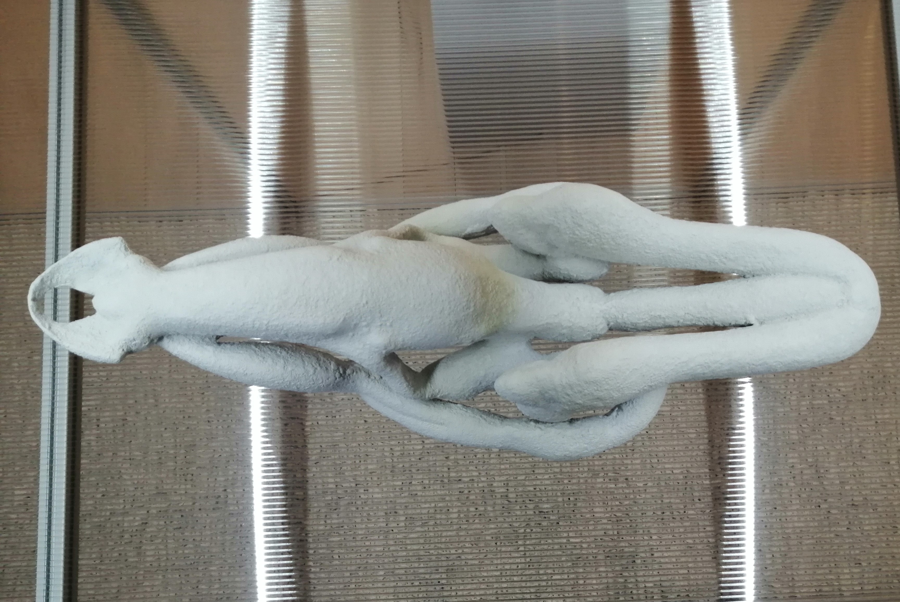
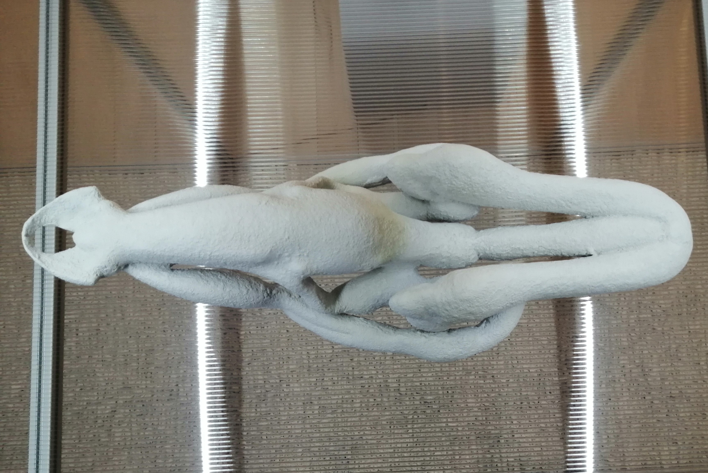

Biederman, Morphogenerator
2018
travail issu d'une résidence Scale travels au laboratoire lbérique des nanosystémes + gnration de Braga au portugal avec le soutien du Conseil des Arts et des lettres du Québec et du conseil des Arts du canada. lorsqu'il compose cette oeuvre, l'artiste se réfère au travaux d'Alan Turing sur la morphogénèse rassemblant des lois qui déterminent les formes. et bien que le mathématicien anglais soit connu pour ses travaux sur L'IA, il s'intéressait tout autant aux systémes biologique. sa passion pour les nombres faisait le lien en le vivant et la machine. c'est anisi que se spectacle est sans échelle, la ou les formes et le couleurs s'entremelent dans d'éternels mouvement sans début ni fin, et ou des forces contraires, allant de la dilatation a la contraction.tout en sachant que, jamais , les textures de l'éphémère qui s'affiche ne se recalculeront a l'identique. c'est une oeuvre que je pense alie tres bien la realité des mathématique et sa relation dans le vivant, la ou les shémas semble identique alors que rien ne l'ai, un peu comme le chaos de l'unviers, l'ordre dans le désordre.
Learn More
 
